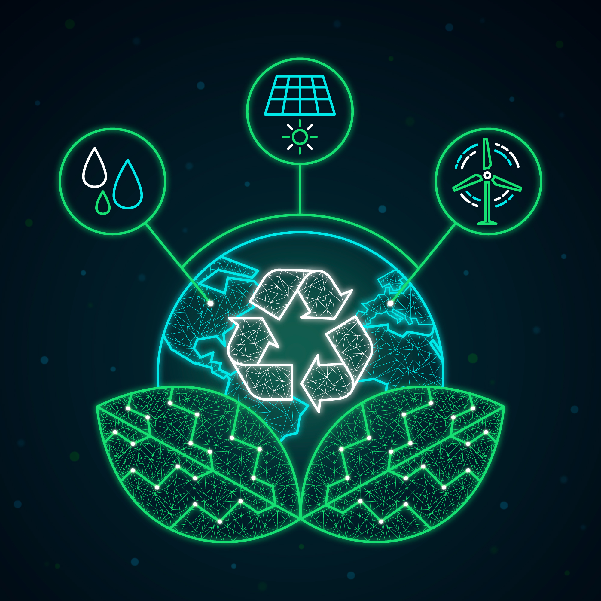

Ecologia
Ecologia é a especialidade da biologia que estuda o meio ambiente e os seres vivos que vivem nele, ou seja, é o estudo científico da distribuição e abundância do seres vivos e das interações que determinam a sua distribuição.Resumindo a ecologia é aciencia que estuda as relações dos seres vivos entre si e deles com o meio ambiente. sendo assim,essa ciência preocupa-se com todos os fatores que afetam um organismo,sejam eles quimicos,fisicos ou biologicos.Como o proprio nome indica,a ecologia faz estudo da "casa" de cada organismo. Apesar de parecer simples,é um estudo bastante complexa e abrangente, uma que cada pequeno fator, fisico,quimico ou biologico, é fundamental para garantir a sobrevivência de um determinado organismo. Imagine,por exemplos,uma especie de planta que vive em um ambiente árido e passa a ser submetida a grandes regimes de chuvas, ou então um lago onde é introduzida uma nova especie de peixe. em todos os dois casos haverá mudaças que afetarão diretamente essas espécies.Como sabemos nenhum organismo consegue viver sem interagir com outros seres e com o meio.

Tecnologia e Ecologia
Houve um momento na história em que o progresso técnico ia em contra da ecologia. O nascimento da indústria significou a proliferação de fábricas e um aumento dos níveis de produção só era possível de ser conseguido com maior quantidade de energia o que, há algumas décadas, só era obtida através da queima de combustíveis fósseis ou de centrais nucleares. No entanto, a tendência está mudando. Agora as necessidades energéticas são outras e o progresso técnico costuma vir acompanhado de um maior compromisso ecológico O que há anos começou como parte das políticas de responsabilidade corporativa agora se transformou numa necessidade econômica. A tecnologia e a ecologia se estão aliando e este aperto de mãos é cada vez mais sólido. A eficiência energética é agora um dos objetivos de qualquer dispositivo tecnológico. A eficiência significa menor consumo de energia, o que condiz um maior respeito pelo meio ambiente. E hoje em dia em muitos nichos tecnológicos se procuram produtos eficientes ao máximo. O campo da eletrônica de consumo é um dos mais próximos. Nele os dispositivos móveis se impuseram: desde celulares a caixas de som, passando por mouses sem fio ou fones de ouvido por bluetooth –a ideia é eliminar os cabos e acabam dependendo da bateria. Por tanto, a utilidade de um produto passou a estar ligada a sua autonomia, que vem a ser o mesmo que dizer à sua eficiência.
Como a Tecnologia ajudar a proteger o meio ambiente?
A tecnologia pode desempenhar um papel importante na sustentabilidade e no meio ambiente de várias maneiras. Por exemplo, a tecnologia pode ser usada para aumentar a eficiência energética, reduzir o uso de recursos naturais, melhorar a gestão de resíduos e aumentar a produção de energias renováveis. Além disso, a tecnologia pode ser usada para monitorar e medir o impacto ambiental de diferentes atividades, o que pode ajudar a identificar problemas e encontrar soluções.
Qual é o impacto da tecnologia no meio ambiente?
Os impactos do desenvolvimento tecnológico no meio ambiente são claros e vêm se tornando cada vez mais explícitos. A degradação da fauna e da flora, a degeneração da atmosfera e as mudanças climáticas são alguns dos sintomas do prejuízo que esse desenvolvimento causa.13 de jul.